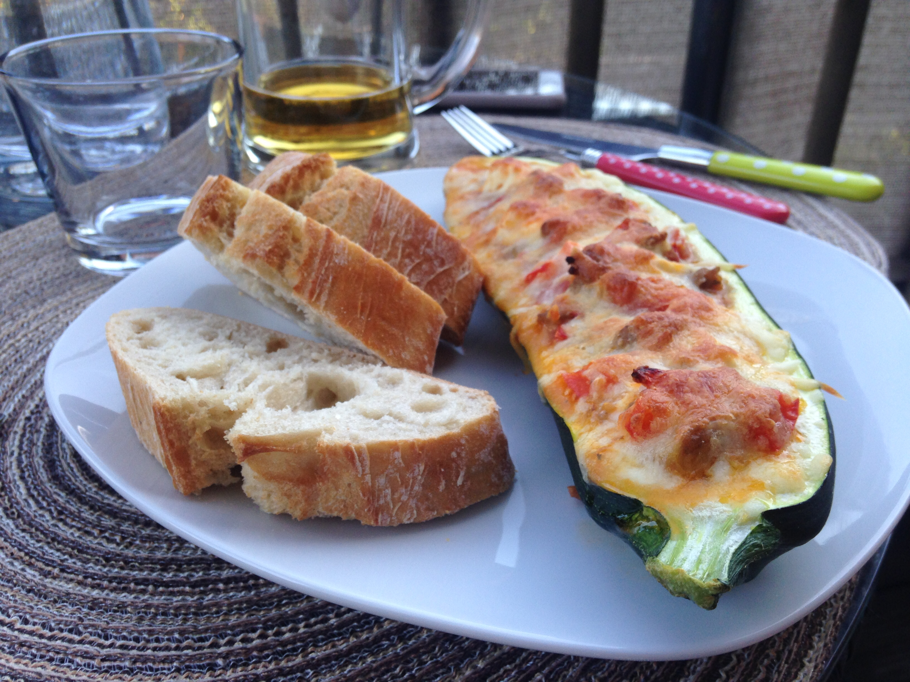

Gefüllte Zucchini Boote
ZUTATEN
- Zucchini (groß)
- Paprika
- Bund Kirschtomaten
- Zwiebel
- Feta
- g Hackfleisch
- Gratinkäse
- Teelöffel Gemüsebrühe
- Teelöffel Salz
- Öl (z.B. Sonnenblumenöl)
ZUBEREITUNG
- Paprika, Tomaten und Zwiebeln würfeln.
- Tomaten- und Zwiebelwürfel in Schüssel geben.
- Paprikawürfel in Pfanne mit etwas Öl andünsten.
- Feta würfeln.
"Boote" vorbereiten:
- Während die Paprika dünstet, Zucchini halbieren.
- Mit einem Esslöffel beide Hälften der Zucchini ausschaben, sodass zwei "Boote" entstehen.
- Inneres der Zucchini klein Würfeln und zu den Tomaten- und Zwiebelwürfeln geben.
Füllung zubereiten:
- Hackfleisch zur Paprika in die Pfanne geben und durchkochen.
- Salz in die Pfanne geben.
- Gemüsebrühe in die Pfanne geben.
- Tomaten, Zwiebel und Zucchini in die Pfanne geben - alles ca. 10 Minuten köcheln lassen.
Währenddessen den Ofen vorheizen (180 Grad Umluft) und die Zucchini-Hälften auf ein Backblech mit Backpapier legen.
- Gemüse-Fleisch-Mischmasch aus der Pfanne in eine Schüssel geben und den gewürfelten Feta unterheben.
- Nun den Inhalt der Schüssel mit einem Esslöffel in die Zucchini-Boote füllen.
Es bleibt bestimmt etwas von der Füllung übrig - einfach im Kühlschrank aufheben und z.B. am nächsten Tag für überbackene Brotscheiben verwenden...).
- Gratinkäse großzügig über die Zucchiniboote verteilen.
- Ab in den Ofen und so lange backen, bis der Gratinkäse schön gold-braun knusprig ist - fertig 🤩
Tipp: mit frischem Baguette oder Giabatta servieren - lecker 😊